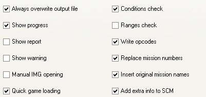

Esta pagina contiene las opciones del (de) compilador en su mayoria.
Sanny Builder necesita ciertos archivos del juego mientras trabaja, por lo que debe elegir un directorio correcto donde esta instalado el juego. Puede ingresar la ruta manualmente o seleccionando el directorio a traves del dialogo que aparece cuando presiona el boton.
El programa tambien necesita el archivo INI que
contiene la lista de codigos de operacion. Puede establecer la ruta
a este archivo aqui (manualmente o seleccionando el cuadro de
dialogo de archivo que aparece cuando presiona el boton).
Hay una lista de traducciones disponibles para Sanny Builder. Los archivos de traduccion estan presentes en la carpeta \lang. Elija el idioma deseado para la interfaz del programa en esta lista. Las instrucciones de traduccion estan contenidas en el archivo "Como traducir.txt" en la carpeta \lang.
Puede asociar diferentes extensiones de archivos con Sanny Builder. Cuando se selecciona una casilla de verificacion, se cambia su registro de Windows y puede abrir los archivos con esta extension simplemente haciendo clic en el. Para cancelar la asociacion, desmarque una casilla de verificacion adecuada.

Aqui puede ver las opciones comunes del (de) compilador.
Siempre sobreescribir el archivo de salida
Si este controlo, el descompilador escribe los datos decompilados en el archivo de salida sin tener en cuenta si existe o no. De lo contrario, y el archivo de texto con ese nombre ya existe, el decompilador no lo reescribira sino que creara un nuevo archivo de texto con indice (por ejemplo, main [0] .txt).
Mostrar progreso
Mientras el programa ejecuta el proceso de compilacion (de) y si se selecciona este cuadro, hay una linea de progreso en la barra de estado. De lo contrario, la barra de estado tiene palabras: Espere. Mostrar progreso ralentiza levemente el tiempo de ejecucion.
Mostrar advertencia
Esta opcion tiene el significado solo cuando se compilan los scripts de San Andreas. Si el juego se ejecuta durante el proceso de compilacion, el archivo script.img que contiene la parte de los guiones no se puede reescribir ya que el juego usa este archivo. El compilador muestra una advertencia al respecto. Puede desactivar esta advertencia marcando esta casilla.
Apertura manual de IMG
Cuando se inicio el proceso de descompilacion, el programa busca el archivo script.img que contiene algunos scripts del juego. Si este archivo no se encuentra en la misma carpeta con el archivo SCM o en la carpeta San Andreas \ data \ scripts \, se muestra el mensaje de error. Si esta opcion se altero, puede seleccionar el archivo img necesario manualmente.
Carga rapida del juego
Sanny Builder puede omitir las pantallas de inicio de SA (F8). Si esta habilidad causa un error en la version de tu juego, deshabilita esta opcion.
Verificar condiciones
Esta opcion tiene dos significados. En primer lugar, el programa reemplaza la cantidad de condiciones en el codigo de operacion IF con AND u OR. En segundo lugar, el programa puede compilar el constructo IF..END y calcular el parametro IF necesario en las condiciones con las palabras AND o OR.
Rangos de verificacion
La cantidad de variables locales accesibles es limitada. Cuando esta opcion esta marcada, el compilador verifica el uso correcto de ellos.
Escribir codigos de operacion
Esta opcion convierte la salida de descompilacion de nivel alto a nivel bajo y viceversa. Si esta opcion no esta marcada, el descompilador usa las clases y las palabras clave disponibles en lugar de los codigos de operacion. Ademas, no hay codigos de operacion para expresiones matematicas simples. Si la opcion esta marcada, todos los codigos de operacion estan presentes en el archivo de salida.
Reemplazar numeros de mision
Cuando esta opcion esta marcada, el descompilador
reemplaza el numero de mision en el codigo de operacion
start_mission con el nombre de la mision. El nombre de la mision es
el nombre de la etiqueta definido en el encabezado del
archivo.
Este nombre tambien podria usarse para un movimiento
rapido del codigo de la mision.
Insertar nombres de mision originales
Cuando esta opcion esta marcada, el descompilador agrega nombres predefinidos de misiones originales como comentarios para el codigo de operacion start_mission y para la linea DEFINE MISSION en el encabezado del archivo.
Agregue informacion adicional a SCM
Si esta opcion esta marcada, el compilador agrega informacion adicional al final del archivo main.scm. Esta informacion se usara mas adelante cuando se descompile este archivo para ponerlo en conformidad maxima con la fuente original. Los siguientes datos se agregan al final de main.scm: hex..end construye offsets, nombres de variables globales, etc. Preste atencion a que el archivo compilado de esa manera no se puede decompilar en versiones anteriores de SB (excepto en el caso en que la opcion ignore_unknown este habilitada).